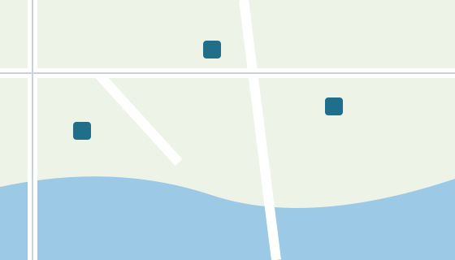

Trail map
All marked trails around Lake Fictal at a glance. Blue squares are car parks with a trailhead.

To see where you are, use the button at the bottom right of the map.
All marked trails around Lake Fictal at a glance. Blue squares are car parks with a trailhead.

To see where you are, use the button at the bottom right of the map.